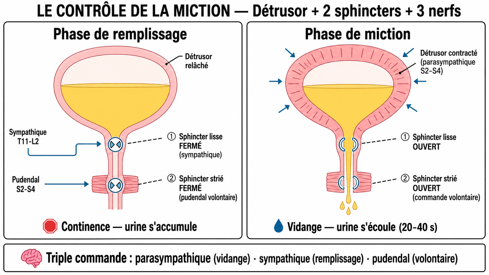

Qui commande la vessie : 2 sphincters, 3 nerfs
Un réservoir ne sert à rien sans robinet.
La vessie en a deux — et trois nerfs pour les manœuvrer.
Les deux fiches précédentes t'ont donné le matériel : la vessie, ce réservoir avec son col en bas, et l'urètre, la sortie. On installe maintenant les robinets et le câblage. La miction (le fait d'uriner) paraît simple, mais c'est en réalité un mécanisme coordonné entre un muscle — le détrusor, le muscle de la paroi vésicale, qui se contracte pour vider —, deux sphincters (un involontaire, un volontaire) et le système nerveux. Comprendre cette coordination, c'est comprendre pourquoi on peut retenir et relâcher à volonté — et pourquoi cette commande peut être perturbée (incontinence, rétention, vessie neurologique).
Au niveau du col vésical et de l'urètre proximal, il y a deux sphincters successifs qui contrôlent la sortie de l'urine. Ne les confonds jamais.
| Sphincter | Type de muscle | Commande | Innervation |
|---|---|---|---|
| Sphincter lisse (interne) |
Muscle lisse (involontaire) | Réflexe, automatique | Système nerveux autonome (sympathique → fermeture / parasympathique → ouverture) |
| Sphincter strié (externe) |
Muscle strié squelettique (volontaire) | Volontaire, conscient | Nerf pudendal (somatique, S2-S4) |
Et leurs positions se retiennent dans l'ordre de haut en bas. Le sphincter lisse est au niveau du col vésical, juste au-dessus de l'urètre. Le sphincter strié est plus bas, au niveau de l'urètre membraneux — celui qui traverse le plancher pelvien. Le lisse d'abord, le strié ensuite : l'urine franchit toujours les deux dans cet ordre.
Sphincter STRIÉ = EXTERNE = VOLONTAIRE = SOMATIQUE (nerf pudendal, S2-S4) — c'est lui que tu contractes consciemment pour retenir.
Reste le câblage. La vessie est sous une triple commande nerveuse, qui pilote 2 muscles : le détrusor et les 2 sphincters vus juste avant. Pas besoin de l'apprendre par cœur — c'est logique.
- 1 Le sympathique. Nerfs hypogastriques, T11-L2. C'est le « mode lion » (quand tu es en alerte, uriner n'est PAS la priorité) : il relâche le détrusor (la vessie se remplit tranquillement) et contracte le sphincter lisse (rétention). C'est la commande de la continence passive, le mode par défaut pendant le remplissage.
- 2 Le parasympathique. Nerfs pelviens, S2-S4. C'est le « mode repos », à l'inverse (le corps peut s'occuper de la digestion et de l'évacuation) : il contracte le détrusor (vidange) et relâche le sphincter lisse. C'est la commande de la miction.
- 3 Le somatique. Nerf pudendal, S2-S4. Le contrôle volontaire du sphincter strié externe. C'est toi qui décides consciemment d'ouvrir ou de retenir.
